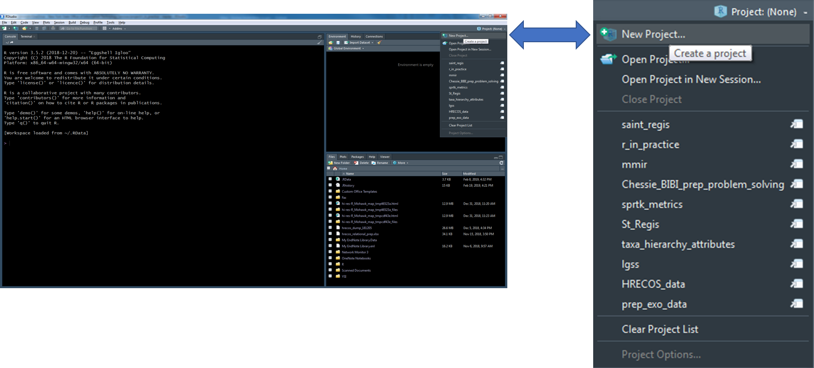
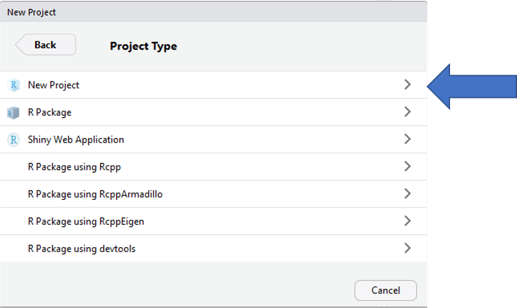
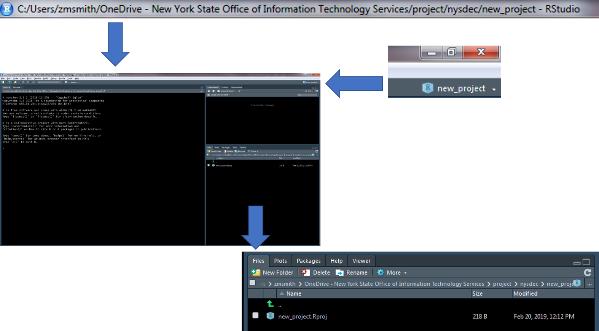
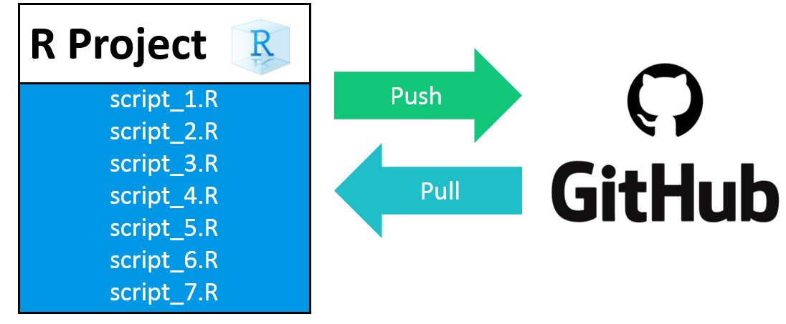

6 R Project Development
Overview
- Easier to access files (relative path)
- Relative paths help prevent broken paths
- In general, DO NOT use setwd()
- Will work if the project folder is moved to a new location on you local machine or moved to a new machine.
- Relative paths help prevent broken paths
- Designed to easily integrate with version control (GIT)
- In general, all data, scripts, and output should be stored within the project directory.
6.1 Create a New R Project
- Create a new R project by clicking on the dropdown menu at the top right of RStudio and selecting “New Project”

- Select “New Directory” within the “Create Project” window

- Select “New Project” within the “Project Type” window

- Enter a project name(below I have given the name “new_project”), the project directory (where the project should live), and select “Create Project”
- Tip: Create a “project” folder that will act as your parent directory for all R projects. This will make it much easier to navigate to and between projects.

- A new session specific to your R project will start within RStudio
- There are a number of ways to tell which project is open…

6.3 Recommended Workflow
- Set up a GitHub repository.
- Create an R-project connected to the GitHub repository.
- Develop R-scripts.
- Push and pull project changes to and from GitHub.
